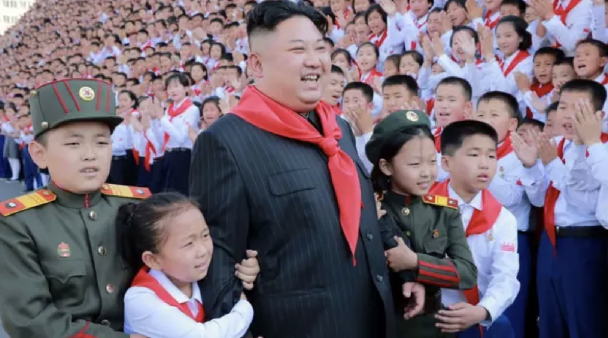
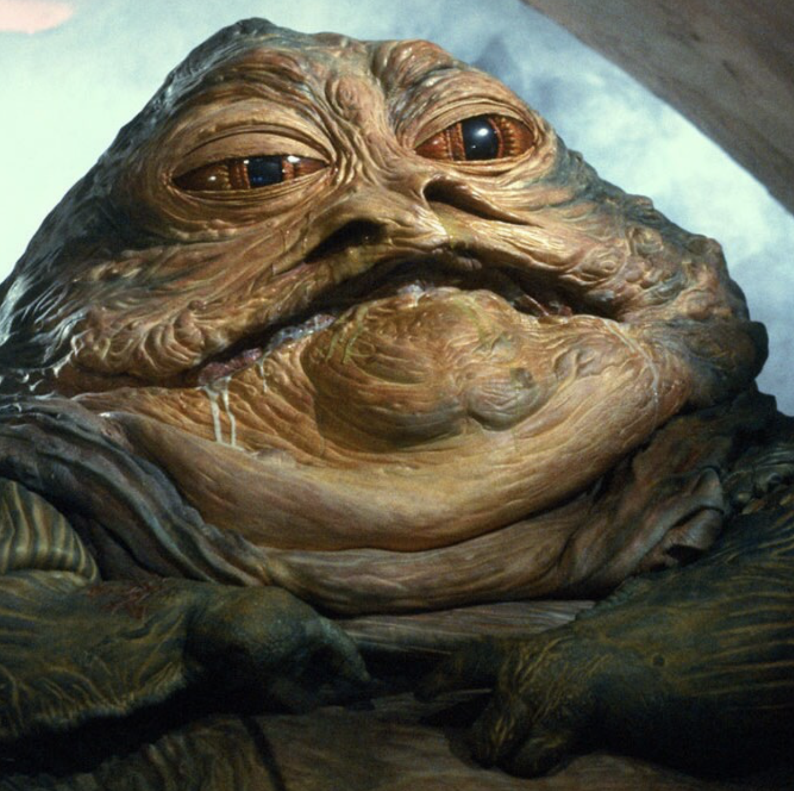
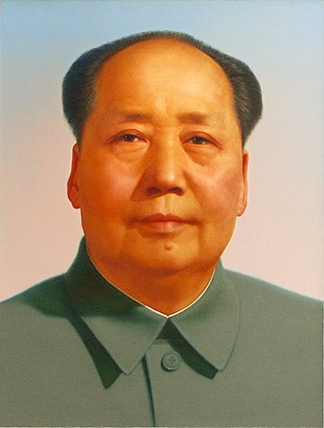
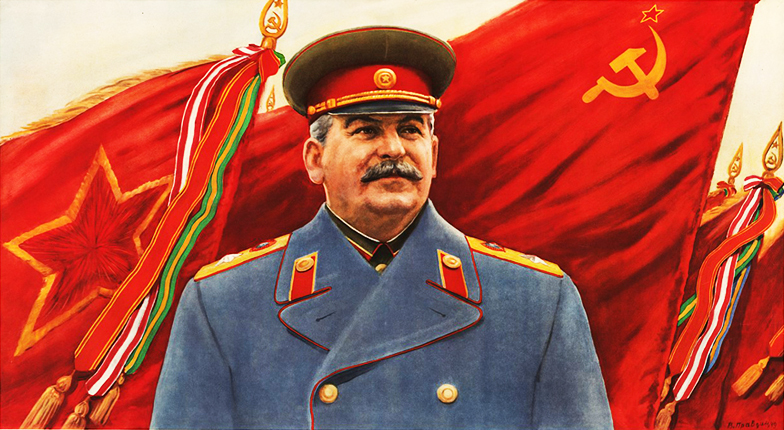

KIM
el artista que nos muestra su obra entro a la universidad el año 2018 curso taller central con joaquin cociña y patricio kind. al año siguiente se salio y tomo clases en el taller de ignacio gumucvio de analisis de obra. durante la pandemia pinto muchas obras que marcaron un camino. el año 2021 ingreso al taller dardo con raimundo edwards y rodrigo zamora. tambien retomo clases con ignacio gumucio en su taller. tambien ingreso a la finis terrae. en 2025 tomo clases de escritura con rafael gumucio. en el mismo año tuvo clases en la finis con mariana njmanovich y empezo a hacer esculturas e intalaciones donde surgio la idea de crear el imaginario en el cual se encuentra trabajando hoy mismo haciendo esculturas con malla de gallina, film industrial, maskingtape, madera y pintandolas con tempera.

JABBA
la obra tiene la dimension de 3m x 3m x 3m

RAMSES
Título, técnica, disciplina artística, dimensiones, más una breve fundamentación de la obra (600 palabras como referencia). La obra son 3 esculturas, que estan pensadas para ser expuestas juntas. estan hechas de materiales precarios pero montadas como si fueran grandes obras de arte. hay un detalle sobre la arqueologia. las obras son parte de un ecosistema, ambientado en el pasado y son mostradas como piezas arqueologicas. con un montaje que intenta preservarlas. dandoles la condicion de objetos preciados por la humanidad. en la escultura de la ballena hay un toque kitsch con la forma de montaje ostensosa que contrasta con la precariedad de la escultura. lo que sigue la dinamica de la gran obra que se enaltece por su montaje y su supuesta historia.

MAO
el artista que nos muestra su obra entro a la universidad el año 2018 curso taller central con joaquin cociña y patricio kind. al año siguiente se salio y tomo clases en el taller de ignacio gumucvio de analisis de obra. durante la pandemia pinto muchas obras que marcaron un camino. el año 2021 ingreso al taller dardo con raimundo edwards y rodrigo zamora. tambien retomo clases con ignacio gumucio en su taller. tambien ingreso a la finis terrae. en 2025 tomo clases de escritura con rafael gumucio. en el mismo año tuvo clases en la finis con mariana njmanovich y empezo a hacer esculturas e intalaciones donde surgio la idea de crear el imaginario en el cual se encuentra trabajando hoy mismo haciendo esculturas con malla de gallina, film industrial, maskingtape, madera y pintandolas con tempera.

STALIN
el artista que nos muestra su obra entro a la universidad el año 2018 curso taller central con joaquin cociña y patricio kind. al año siguiente se salio y tomo clases en el taller de ignacio gumucvio de analisis de obra. durante la pandemia pinto muchas obras que marcaron un camino. el año 2021 ingreso al taller dardo con raimundo edwards y rodrigo zamora. tambien retomo clases con ignacio gumucio en su taller. tambien ingreso a la finis terrae. en 2025 tomo clases de escritura con rafael gumucio. en el mismo año tuvo clases en la finis con mariana njmanovich y empezo a hacer esculturas e intalaciones donde surgio la idea de crear el imaginario en el cual se encuentra trabajando hoy mismo haciendo esculturas con malla de gallina, film industrial, maskingtape, madera y pintandolas con tempera.